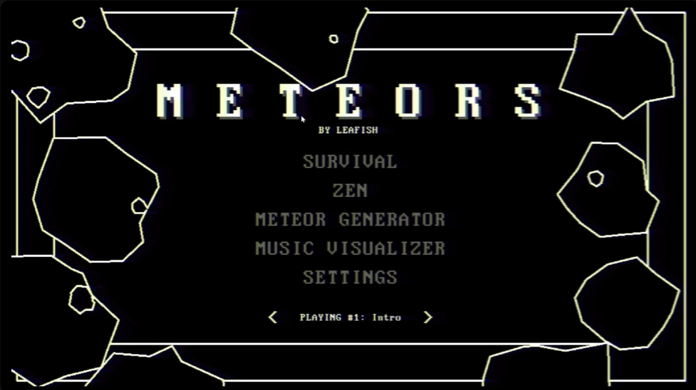
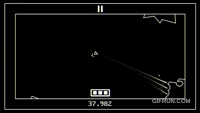

Hi! im,
Lucas Salinas
I'm a programmer and game developer based in Orlando, Florida.
I am currently studying computer science at the University of Central Florida.
I make games, music, art and random projects in my free time.
I am currently studying computer science at the University of Central Florida.
I make games, music, art and random projects in my free time.
METEORS

A modern reimagining of the classic arcade game Asteroids.
I made this because I wondered what a game like asteroids could look like with if it was created today, without
the technical limitations that the creators at the time must have faced.
This project made me face a lot of challenges, but was very satisfying to finally complete.
The game features computer drawn vector art, like the original game. Everything from the meteors to the UI is drawn using only lines.


All the meteors in the game are randomly generated using a series of points around a radius, and are given a random number of holes.
The game includes a meteor making interface to play with the values used to make them.
It also includes "seamless screen wrapping", which means that the asteroids don't just teleport from edge to edge, but, as one side of the asteroid crosses the border, it appears on the opposite end (kind of like the game "Portal").